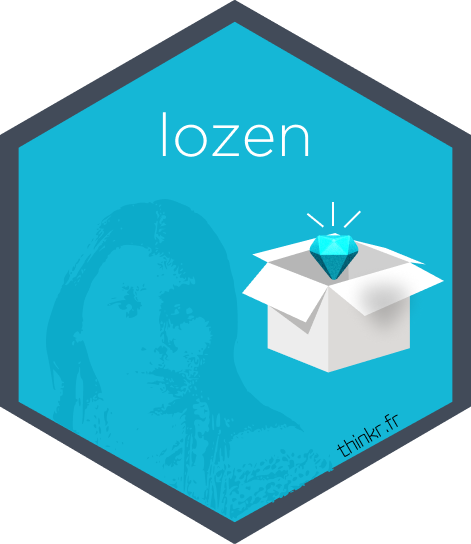

ae - Create Weekly with GitHub or GitLab
ae-create-weekly-with-github-or-gitlab.Rmd
library(lozen)For a project on Gitlab
Create a weekly for GitLab with gl_create_weekly()
# example-weekly = 37585948 (on GitLab.com)
out <- gl_create_weekly(
project_id = "<get_your_id_project>",
date_min = Sys.Date() - 7,
private_token = Sys.getenv("GITLAB_TOKEN")
)
cat(out$weekly_info)
# clipr::write_clip(out$weekly_info)
# Get the daily weekly for a past day
out_past <- gl_create_daily(
project_id = "<get_your_id_project>",
date_daily = "2022-07-20",
private_token = Sys.getenv("GITLAB_TOKEN")
)
cat(out_past$weekly_info)
# Get the daily weekly for a today
out_today <- gl_create_daily(
project_id = "<get_your_id_project>",
private_token = Sys.getenv("GITLAB_TOKEN")
)
cat(out_today$weekly_info)
# clipr::write_clip(out$weekly_info)Visualise the nature of the developments for GitLab with
visualise_commits()
Only the main branch is considered.
visualise_commits(
project_id = "<get_your_id_project>",
gitlab_url = Sys.getenv("GITLAB_URL", unset = "https://gitlab.com"),
date_min = "2022-09-22",
date_max = "2022-09-29",
private_token = Sys.getenv("GITLAB_TOKEN")
)
# Or on project already cloned
tempdir <-
clone_locally(full_url = "https://gitlab.com/my_name/my_repo", open = FALSE)
visualise_commits(
path = tempdir,
date_min = "2022-09-22",
date_max = "2022-09-29"
)Visualise the progress of the milestones for GitLab with
gl_get_milestones_progress()
gl_get_milestones_progress(
project_id = "<get_your_id_project>",
private_token = Sys.getenv("GITLAB_TOKEN")
)